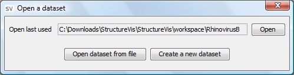

When launching StructureVis a popup will appear asking you to open a dataset, the most recently used dataset will be displayed in a textbox and can be opened by clicking "Open". To open a different dataset you can click "Open dataset from file". To create a new dataset click "Create a new dataset".
Alternatively, you can select "Open dataset" from the File menu.
From the File menu select "Create dataset". For a complete tutorial see: Using the dataset creator.